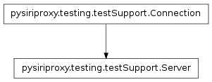
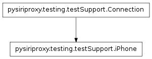
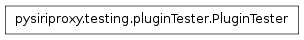

The pluginTester module contains a class that provides the ability to test the object filters and speech rules.



The PluginTester class provides the ability to test the configured plugins for pysiriproxy. The intent is for this class to be subclassed to preform desired tests. This class provides several callback functions which can be overridden by the concrete PluginTester subclasses for specific purposes. These functions are described below:
- iPhoneCallback() – This function is called in the event that data is being sent from the iPhone connection to the Server connection, where obj is the specific data being transmitted.
- serverCallback() – This function is called in the event that data is being sent from the Server connection to the iPhone connection, where obj is the specific data being transmitted.
The function called in the event that an object is received from the iPhone.
The function called in the event that an object is received from the Server server.
Test the object filters for all of the configured Plugins to determine if any respond to the given object for the given direction. This function returns None if no filters were applied to this object, it returns False if this object was dropped, or it returns the object modified by the object filters.
obj – The object used to test filters
the iPhone or from the Server)
Test the speech rules for all of the configured Plugins to determine if any respond to the given speech text. This function returns True if any Plugins had speech rules that matched the given text, otherwise it returns False.